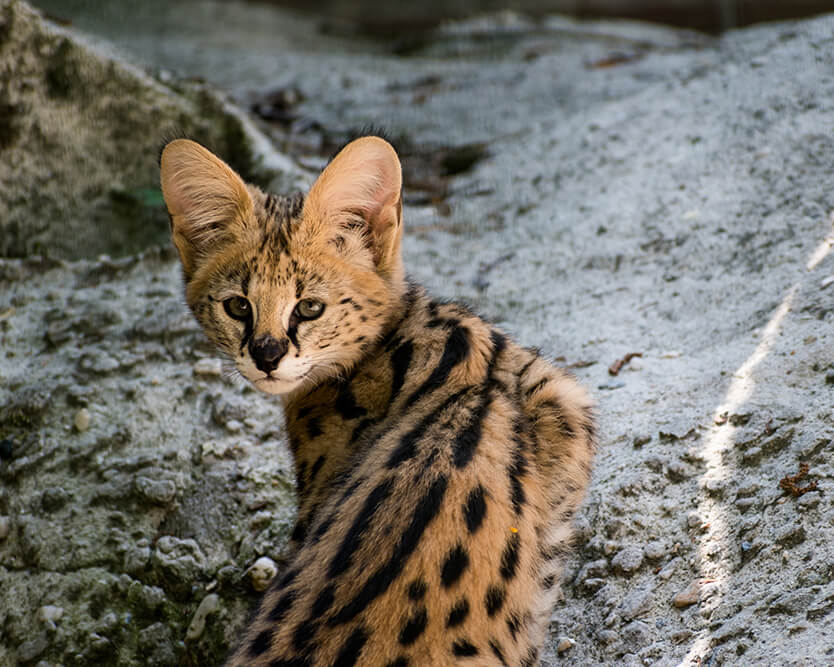

Serval kedisi, Afrika’nın savan ve sulak alanlarında yaşayan, uzun bacakları ve büyük kulaklarıyla tanınan orta boy bir yaban kedisidir; altın sarısı kürkü üzerindeki siyah benek ve çizgilerle kamuflaj sağlar, iri kulakları sayesinde en küçük sesleri bile duyarak avını tespit eder; ortalama 60–100 cm uzunluğa ve 9–18 kg ağırlığa ulaşır, doğada 10–12 yıl, esaret altında ise 20 yıla kadar yaşayabilir; avlanmada çevik sıçramalarıyla öne çıkar, kuşlar, kemirgenler ve küçük sürüngenlerle beslenir; yalnız yaşayan bir türdür ve geniş alanları sahiplenerek diğer servalları uzak tutar; insanlar için genellikle tehlikeli değildir ancak vahşi doğada dikkatle yaklaşılması gerekir; kültürel açıdan ise Afrika halklarının mitolojisinde çeviklik, keskin duyular ve doğanın dengesiyle ilişkilendirilmiş bir sembol olarak görülür.